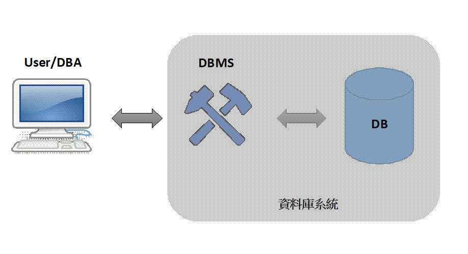

前言
SQL 原名為 Structured Query Language（念法為 sequel 或單念字母 S.Q.L.）稱為結構化查詢語言，用於查詢、更新及管理關聯式資料庫（Relational Database）的語言，也可以從資料庫擷取、排序或篩選特定的資料。
資料庫
資料庫(Database)可稱為 DB，為一個可以存放大量資料集合的地方。
資料庫管理系統
資料庫管理系統(Database Management System)簡稱為 DBMS，DMBS 提供資料庫的資料管理介面，供使用者對資料庫進行 CRUD 等動作，同時也提供管理使用者的介面，去設定每個使用者擁有不同的資料庫權限，或用於一般人員及專業人員對資料庫的使用權利，確保重要資料只賦予相關使用者操作，或避免資料竊取和破壞，以及確保資料庫的資料安全，如 DBA 需要擁有較高的使用權限來管理資料庫，而一般使用者只需要簡單查詢功能的權限。
DBMS 除提供介面外，大部分還可控制效能以及備份機制，依照資料庫實際使用情形提高或降低效能，調整為資料庫最適合的狀態；為避免資料受到不可抗力因素的破壞，開啟備份機制確保資料可以保存及回朔於最後一次備份時間點。
資料庫管理員
資料庫管理員(Database Administrator)簡稱為 DBA，為負責管理資料庫系統的專業人員，負責確保資料庫系統效能最佳化與當機緊急處理等工作。
上述彼此之間的關係圖如下

資料庫系統語言
DDL
DDL (Data Definition Language)
資料定義語言
用來定義概念和實體階層的內容與其存在的關係，即為定義資料庫、資料表、預存程序、觸發程序等物件，是一種管理資料庫結構的語言，而這些特殊描述儲存於資料字典(Repository)的檔案中，該檔案為一種 Metadata。
主要指令語法有
- CREATE：建立物件
- ALTER：修改物件
- DROP：刪除物件
DML
DML (Data Manipulation Language)
資料操縱語言
允許使用者存取及處理資料庫中的資料，包含新增、更新、刪除等動作
主要指令語法有
- INSERT：新增資料
- UPDATE：更新資料
- DELETE：刪除資料
DQL
DQL (Data Query Language)
資料查詢語言
負責資料查詢，不對資料本身有修改的語句，指令只有一個
- SELECT：查詢資料庫中的資料
DCL
DCL (Data Control Language)
資料控制語言
用於處理資料庫權限及安全設定
主要指令語法有
- GRANT：賦予使用者對物件的使用權限
- REVOKE：取消使用者對物件的使用權限
TCL
TCL (Transaction Control Language)
交易控制語言
交易的觀念為「每次交易成功時，對交易期間內所有變更資料做異動，交易失敗時，則清除所有資料異動之動作，回復交易前的樣貌」。
- START TRANSACTION (BEGIN, BEGIN WORK)：開始交易作業
- COMMIT：交易完成作業
- ROLLBACK：交易作業異常，以變動資料回滾至交易開始的狀態